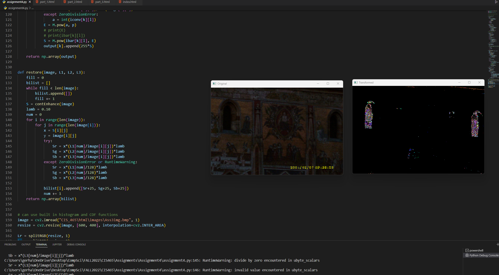

Here I tried to get the program to correctly output with the color restoration. I think the problem with my code has to do with the CDF not being calculated correctly with the L value. This is because the output is dark and I thought this was because of the z value being assigned and fixed before the lopps. I tried to set z to 1 in the but this did not fix the issue. I will try to get this working before the end of the late deadline to get a better score with the late penalty.